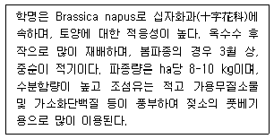

축산산업기사 (2004-05-23 기출문제)
1과목: 가축번식 육종학
1. 난포낭종이 발생한 소가 사모광(思牡狂)이 되는 경우 무슨 호르몬의 분비가 왕성할 때인가?
- 에스트로겐(estrogen)
- 옥시토신(oxytocin)
- 프로게스테론(progesterone)
- 프로락틴(prolactin)
(정답률: 53%)

2. 젖소의 이상적인 체형은?
- 정삼각형
- 장방형
- 설상형(쐐기꼴)
- 정사각형
(정답률: 84%)
3. 소의 분만과정 중 제2파수는 어느 부위에서 유래된 것인가?
- 요막
- 맥락막
- 영양막
- 양막
(정답률: 70%)
4. 돼지의 수정(종부)적기는?
- 발정 개시 직후
- 수퇘지 허용 직후
- 수퇘지 허용후 10∼26시간
- 수퇘지 허용후 3∼4일
(정답률: 82%)
5. 같은 품종에 속하는 개체간의 교배는?
- 품종간교배
- 종간교배
- 순종교배
- 잡종교배
(정답률: 68%)
6. 태반의 기능에 대한 설명으로 옳은 것은?
- 물질교환과 호르몬 생산으로 나뉜다.
- 모체와 태아가 동시에 발달하도록 해준다.
- 수분과 전해질은 태반을 자유롭게 투과할 수 없다.
- 태반과 태아는 스테로이드(steroid) 생성에 필요한 효소적 기능을 독자적으로 가지고 있다.
(정답률: 50%)
7. 임신유지에 불필요한 호르몬은?
- 옥시토신(oxytocin)
- 프로게스트론(progesterone)
- 에스트로겐(estrogen)
- 게스타겐(gestagen)
(정답률: 64%)
8. 연간 산란수에 가장 크게 영향을 주는 형질은?
- 성성숙
- 산란강도
- 산란 지속성
- 동기 휴산성
(정답률: 58%)
9. 닭의 산육능력의 유전에 관한 설명 중 틀린 것은?
- 성장율에 대한 유전력은 0.4∼0.5 정도이다.
- 생체중과 정강이 길이간의 높은 상관관계를 갖는다.
- 근친교배종이 잡종교배보다 성장율이 빠르다.
- 수병아리가 암병아리보다 성장율이 빠르다.
(정답률: 81%)
10. 선발의 결과가 아닌 것은?
- 우수한 품종을 육성
- 경제형질의 개량
- 새로운 유전자의 창출
- 가축의 외모 개선
(정답률: 76%)
11. 육우의 왜소증(dwarfism)은 정상우에 대하여 열성이다. 정상우(DD)와 왜소증우(dd)가 교배하였을 경우 F1의 표현형과 유전형을 바르게 표시한 것은?
- 정상(DD)
- 정상(Dd)
- 왜소(Dd)
- 왜소(dd)
(정답률: 82%)
12. 극단으로 온도가 높거나 낮을 때 대부분 가축의 성성숙은 어떻게 변하는가?
- 촉진된다.
- 지연된다.
- 변함이 없다.
- 품종에 따라 다르다.
(정답률: 78%)
13. 우리 나라에서 비육돈을 생산할 때 가장 널리 사용되는 방법으로 모체 잡종 강세 효과와 개체 잡종 효과를 각각 100%씩 이용할 수 있는 교배법은?
- 3원 종료 교배
- 3원 윤환 교배
- 종료 윤환 교배
- F1 잡종 교배
(정답률: 57%)
14. 가계 선발에 대하여 옳은 설명은?
- 가계 내 개체간의 차이는 선발에 있어서 완전히 무시된다.
- 개체 자신의 능력이 가계 평균 능력을 계산하는데 포함되지 않는다.
- 어미돼지의 포유 능력에 영향을 받는 이유시 체중을 개량하는데 효과적이다.
- 단시간 내에 저렴한 비용으로 선발할 수 있다.
(정답률: 61%)
15. 수퇘지의 번식 적령기는?
- 생후 4개월령, 체중 80㎏ 이상
- 생후 6개월령, 체중 100㎏ 이상
- 생후 8개월령, 체중 120㎏ 이상
- 생후 10개월령, 체중 150㎏ 이상
(정답률: 43%)
16. 임신한 여자의 태반에서 분비되는 호르몬으로서 LH와 유사한 생리적 작용을 하는 것은?
- PMSG
- HCG
- placental lactogen
- placental luteotropin
(정답률: 63%)
17. 닭에서 주로 정액 채취하는 방법은?
- 인공질법
- 전기자극법
- 정관 팽대부 맛사지법
- 복부 맛사지법
(정답률: 80%)
18. 배란 후 난자의 수정능력과 보유시간에 대한 설명 중 맞지 않는 것은?
- 자성생식기관내에서 난자의 수정능력 보유시간은 정자의 수정능력 보유시간보다 길다.
- 난자는 대개의 경우 배란 후 12∼24시간 정도 수정능력을 유지한다.
- 인공수정시간이 늦을 경우 난자는 그 수정능력 보유 말기에 수정되기 때문에 수정란이 착상되지 못할 수 있다.
- 난자가 노화되면 유산, 배아흡수 및 이상발생 등이 일어날 수 있다.
(정답률: 70%)
19. 한우의 도체등급 평가시 육량등급을 결정하기 위한 육량 기준지수 계산에 필요한 측정항목이 아닌 것은?
- 등지방 두께
- 근내지방도
- 배장근 단면적
- 도체중량
(정답률: 43%)
20. 젖소의 근친교배 방지방안으로 적절한 것은?
- 종부나 인공수정에 이용할 수소는 암소와 혈연관계가 가까운 것으로 선택한다.
- 종부에 사용할 종모우는 최소 두수로 유지하여 너무 많지 않게 한다.
- 특정지역에서 이용하는 종모우는 상호 혈연관계가 가까운 것을 이용한다.
- 특정지역 젖소의 근친교배 방지를 위해 종모우를 교환하여 이용한다.
(정답률: 80%)
2과목: 가축사양학
21. 젖소의 제1위내에서 합성되는 비타민은?
- 비타민 A
- 비타민 B
- 비타민 D
- 비타민 E
(정답률: 48%)
22. 기초대사율이란 평균 또는 표준 기초대사량에 대하여 동물 개체별 편차를 나타내는 지수로서 다음의 설명 중 잘못된 것은?
- 기초대사율은 대사체중을 근거로 하여 계산하기 때문에 체표면적보다 단위체중에 더 큰 관계가 있다.
- 기초대사율은 70 × 체중(kg)0.75 식으로 계산한다.
- 기초대사율은 수가축이 암가축보다 크고 임신기가 비임신기보다 크다.
- 기초대사율은 나이가 적은 가축이 나이가 많은 가축보다, 오전이 오후보다, 그리고 비거세우가 거세우보다 더 크다.
(정답률: 52%)
23. 임신한 가축에 특히 필요한 무기물은?
- Ca, P, Fe
- P, Mg, K
- Ca, I, Na
- P, K, Fe
(정답률: 80%)
24. 콜라겐(collagen)태 단백질로 구성된 사료는?
- 우모분
- 모발분
- 제각분
- 피혁분
(정답률: 64%)
25. 보리 1㎏이 가지고 있는 우유 생산효과를 무엇이라고 하는가?
- 전분가
- 사료단위
- 우유생산가
- 사료효율
(정답률: 48%)
26. 섭취한 사료의 총에너지에서 분에너지, 뇨에너지, 가연성가스를 제외한 에너지는?
- 가소화에너지
- 대사에너지
- 정미에너지
- 유지에너지
(정답률: 60%)
27. 면실박에 들어 있는 유독성분은?
- myrosinase
- linamarin
- glucosinolate
- gossypol
(정답률: 82%)
28. 성장중인 반추동물의 단백질 요구량을 결정하는 요인이 아닌 것은?
- 분뇨로 없어지는 질소량
- 체중별 증체량에 대한 축적
- 사료 중에 함유된 질소의 생물가
- 아미노산 화학적 등급
(정답률: 77%)
29. 가금류에 많이 사용하는 성장촉진제가 아닌 것은?
- 생균제
- 효소제
- 황산동
- 유기비소제
(정답률: 60%)
30. 16%의 조단백질을 함유하는 비육돈 사료를 만들기 위하여 기초 사료(조단백질 10%)와 단백질 사료(조단백질 35%)를 이용할 때 기초 사료와 단백질 사료는 어떤 비율로 섞어야 되는가?
- 기초 사료 : 단백질 사료 = 10 : 35
- 기초 사료 : 단백질 사료 = 19 : 6
- 기초 사료 : 단백질 사료 = 3 : 10
- 기초 사료 : 단백질 사료 = 13 : 25.5
(정답률: 70%)
31. 비육이 진행됨에 따라 급여하는 배합사료의 배합비율을 높여야 하는 것은?
- 곡류사료
- 강류사료
- 유박류사료
- 광물질사료
(정답률: 69%)
32. 닭에서 위액(소화효소)을 분비하는 기관은?
- 소낭
- 선위
- 근위
- 소장
(정답률: 63%)
33. 탄수화물의 기능을 설명한 것 중 틀린 것은?
- 지방산, 단백질의 합성에도 쓰인다.
- 가장 경제적인 에너지 발생 영양소이다.
- 체내에서는 지방으로만 축적된다.
- 뇌와 신경조직의 구성성분이다.
(정답률: 80%)
34. 유지방의 합성에 가장 영향을 많이 미치는 지방산은?
- acetic acid
- propionic acid
- butyric acid
- myristic acid
(정답률: 71%)
35. 옥수수의 사료가치를 잘못 설명한 것은?
- 황색 옥수수는 카로틴을 함유하고 있어 비타민 A의 효과가 높다.
- 옥수수는 니코틴산 함량이 낮다.
- 옥수수는 곡류중에서 조단백질 함량이 비교적 낮은편이고 질도 좋지 않다.
- 옥수수는 열량이 높고 경성지방 사료이므로 비육용 사료로 좋다.
(정답률: 45%)
36. 일반적으로 단단하고 흰지방을 생산하는 사료는?
- 밀
- 옥수수
- 보리
- 쌀겨
(정답률: 83%)
37. 정상적으로 산란계를 사육하였다면 최고 산란율(Peak production)에 도달되는 시기는 초산 후 약 몇 개월 후 인가?
- 2개월 후
- 4개월 후
- 6개월 후
- 8개월 후
(정답률: 47%)
38. 돼지의 유지에 필요한 가소화에너지(DE)는 대사체중 (0.75㎏)당 114 kcal 정도이나, 운동량 등의 발열량을 고려하여 약 20%를 증가시킨다면 이 때 유지를 위한 돼지의 DE는?
- 107 kcal/0.75 kg
- 137 kcal/0.75 kg
- 153 kcal/0.75 kg
- 161 kcal/0.75 kg
(정답률: 60%)
39. 다음 설명 중 틀린 것은?
- 사료의 단백질, 탄수화물에서도 체지방이 합성된다.
- 사료의 지방성분 중 요오드가가 높으면 체지방은 경성지방이 된다.
- 돼지의 체지방은 백색이지만 번데기 기름과 같은 것을 급여하면 황색이 된다.
- 불포화 지방산이 많이 함유되어 있는 사료를 공급하면 연성지방이 생성된다.
(정답률: 63%)
40. 조단백질 15%, 대사에너지 2700 kcal/㎏인 사료의 에너지단백질 비율은?
- 180
- 170
- 160
- 150
(정답률: 55%)
3과목: 축산경영학
41. 단일경영의 단점과 가장 거리가 먼 것은?
- 농가경제가 불안정하다.
- 작업의 단일화로 숙련도가 향상된다.
- 노동의 계절적 편중현상이 나타난다.
- 자본회전이 원만하지 못하다.
(정답률: 60%)
42. 난사비(卵飼比)가 4.4이고, 생산비 중 사료비의 비율이 75%이며, 수당 일일사료섭취량을 110g 이라고 할 때 사육 허용 마리수는?
- 20마리
- 25마리
- 30마리
- 35마리
(정답률: 47%)
43. 양돈의 비육경영시 수익성 규정요인은?
- 종돈의 사육비용 절약
- 년간 분만횟수 증가
- 판매돈 1마리당 표준비용 감소
- 분만두수가 많은 종돈 선택
(정답률: 61%)
44. 부분시산법을 이용하여 어느 특정한 경영부문를 변화시키고자 할 때 검토해야 할 사항이 아닌 것은?
- 감소되는 수입
- 생산기술 또는 기술계수
- 새로운 수입 또는 추가수입
- 새로운 비용과 추가비용
(정답률: 64%)
45. 축산경영의 경제적 특징은?
- 간접적 토지관계
- 물량감소의 성격
- 2차 생산의 성격
- 토지이용의 증진
(정답률: 47%)
46. 축산경영에서 자본진단의 지표가 아닌 것은?
- 손익분기율
- 고정자본율
- 자기자본율
- 고정비율
(정답률: 60%)
47. 한우비육경영의 생산비목 중 가장 큰 비율을 차지하는 항목은?
- 노동비
- 감가상각비
- 밑소비
- 약품비
(정답률: 62%)
48. 안전성 지표가 아닌 것은?
- 소득율
- 부채비율
- 유동비율
- 고정비율
(정답률: 56%)
49. 한우사육을 주업으로 하는 농가가 남는 노동력을 이용하여 부업으로 돼지를 사육한다면 두 생산물의 관계는?
- 보합관계
- 보완관계
- 결합관계
- 경합관계
(정답률: 46%)
50. 유사비가 30%일 때 1일 생산유대가 9,000원이다. 1일 허용농후사료비는 얼마인가?
- 2,700원
- 3,700원
- 4,700원
- 5,700원
(정답률: 74%)
51. 경영의 3요소가 아닌 것은?
- 노동력
- 자본재
- 소득
- 토지
(정답률: 69%)
52. 가족노동의 특징이 아닌 것은?
- 정신노동과 육체노동의 병행
- 자율적 노동
- 가족구성원에 의해 지배· 결정됨
- 노동성과에 대한 책임부담이 없음
(정답률: 77%)
53. 축산업의 경쟁력 향상을 위한 지원방안이 아닌 것은?
- 축산업 연구자금 지원
- 전업농가 육성지원
- 품질의 차별화 지원
- 수입관세 및 검역기능의 완화
(정답률: 78%)
54. 토지의 경제적 성질이 아닌 것은?
- 적재력
- 불가증성
- 불가동성
- 불소모성
(정답률: 75%)
55. 축산경영의 공동조직(共同組織)과 관련된 내용 중 잘못 기술된 내용은?
- 규모의 영세성으로 인한 다양한 제약 요인들을 극복하기 위해서는 경영의 공동조직화를 꾀할 필요가 있다.
- 경영의 공동조직화는 농가의 주체성이 보장되어야 한다.
- 번식· 육성센터의 운영은 공동조직화의 좋은 사례이다.
- 목초지나 방목장 등의 토지를 공동 이용하는 조직은 축산경영의 공동조직이라 할 수 없다.
(정답률: 78%)
56. 비용에 대한 설명 중 틀린 내용은?
- 고정비는 단기적으로 볼 때 생산량이 변화하면 변하는 비용
- 유동비는 생산물 산출량과 직접 관계되는 비용
- 총비용은 총고정비와 총유동비의 합계
- 평균비용은 총비용을 생산량으로 나눈 비용
(정답률: 73%)
57. 상업농시대에 있어서 축산경영의 목표로 적합한 것은?
- 자급자족
- 이윤의 극대화
- 생산의 최대화
- 현상유지
(정답률: 80%)
58. 축산경영자의 기능은 경제적 기능과 기술적 기능으로 구성되어 있다. 다음 중 축산경영자의 기술적 기능에 해당되는 사항은?
- 생산자재를 구입하는 일
- 최종생산물인 축산물을 판매하는 일
- 가축의 사육방법을 결정하는 일
- 경영성과를 분석하는 일
(정답률: 68%)
59. 등생산곡선에 대한 설명 중 옳은 것은?
- 등생산곡선은 원점에서 멀수록 생산수준이 낮다.
- 일정한 자원으로 두 종류 이상의 생산물을 생산할 때 각 생산물의 가능한 생산량 조합을 연결한 선이다.
- 일정량의 생산물을 산출할 수 있는 두 생산요소의 가능한 결합을 연결한 선
- 어떤 일정한 생산물 수준을 얻고자 할 때 투입물의 양을 결정하는 척도의 선
(정답률: 49%)
60. 총생산(TPP), 한계생산(MPP), 평균생산(APP)의 관계 중 옳은 것은?
- MPP=APP 일 때 APP는 최대
- MPP＞APP 일 때 APP는 감소
- MPP＜APP 일 때 APP는 증가
- TPP가 최대일 때 MPP는 증가
(정답률: 63%)
4과목: 사료작물학
61. 건초용으로 재배되는 목초는 수량이 많고 기호성 좋은 상번초들인데 다음 중 이에 속하지 않는 초종은?
- 오차드그라스
- 티모시
- 토올페스큐
- 이탈리안라이그라스
(정답률: 40%)
62. 단위 면적당 가소화 영양소 총량을 생산하는 측면에서 생산량이 가장 높은 사료 작물은?
- 옥수수
- 수단 그라스
- 연맥
- 호밀
(정답률: 87%)
63. 방목용 목초로 적합치 않은 것은?
- 화이트 클로버
- 리드 카나리그라스
- 토올 페스큐
- 레드 클로버
(정답률: 42%)
64. 다음 설명 중 건초의 장점이 아닌 것은?
- 정장제로서 설사를 방지한다.
- 햇빛에 말린 건초는 비타민 D의 함량이 낮다.
- 운반과 취급이 용이하다.
- 손쉽게 만들수 있다.
(정답률: 66%)
65. 작부체계에서 옥수수 수확 후 후작으로 많이 이용되고 있는 사료작물로만 묶여진 것은?
- 근채류, 피, 호밀
- 수단그라스, 유채, 연맥
- 호밀, 연맥, 유채
- 호밀, 피, 이탈리안라이그라스
(정답률: 75%)
66. 화본과 작물의 잎혀 형태가 아닌 것은?
- 막형
- 분리
- 모형
- 부재
(정답률: 47%)
67. 종자의 크기가 작은 목초에 알맞는 파종상이 갖추어야 할 조건 중 틀린 것은?
- 하층표토와 상층표토에 관계없이 수분함량이 충분히 있어야 한다.
- 목초가 파종되는 표토는 부드럽고 입상이어야 하나 너무 곱든가 가루모양이어서는 안된다.
- 종자가 파종되는 바로 밑의 토양은 매우 부드러워야 한다.
- 토양의 경운층은 토양수분과 양분이 위로 이동할 수 있도록 미경운된 하층심토와 직접 접촉되고 연결되어 있어야 한다.
(정답률: 71%)
68. 다음 석회, 질소, 인산, 칼륨 비료의 시비효과에 관한 설명 중 잘못된 것은?
- 석회는 다른 비료성분의 흡수율을 증가시킬 수가 있다.
- 질소질 비료는 몇회로 나누어 주는 것이 좋다.
- 인산과 칼륨질 비료는 특히 콩과(두과)에 있어서 시비효과가 크다.
- 다량의 질소시비는 수량은 증가되나 단백질 함량은 저하된다.
(정답률: 64%)
69. 방목의 장점이 아닌 것은?
- 분뇨의 시비노력이 절약된다.
- 단위면적의 수량이 청예법에 비해 많아진다.
- 가축의 건강과 번식에 효과적이다.
- 기호하는 목초를 마음대로 채식할 수 있다.
(정답률: 77%)
70. 다음의 내용을 설명하고 있는 사료작물은?

- 호밀
- 피
- 유채
- 순무
(정답률: 82%)
71. 고온에서 잘 생육하는 사료작물은?
- 연맥
- 유채
- 호맥
- 수수×수단그라스
(정답률: 72%)
72. 하고현상이 일어나지 않는 사료작물은?
- 오차드그라스
- 수단그라스
- 토올 페스큐
- 연맥
(정답률: 63%)
73. 이 목초는 세포내에 기생하는 곰팡이와 공생하여 더운 여름에 견디는 힘이 비교적 강하고, 짧은 지하경과 잎의 견고성으로 방목과 추위에도 강한 초종이다. 그러나 곰팡이에 감염된 이 목초를 섭취한 가축은 생산성이 떨어지기 때문에 종자구입시 주의가 요구된다. 이 초종은 어떤 것인가?
- 알팔파(Alfalfa)
- 오차드 그라스(Orchardgrass)
- 토올 페스큐(Tall fescue)
- 리드 카나리그라스(Reed canarygrass)
(정답률: 50%)
74. 사일리지 조제시 옥수수의 절단 길이로 가장 적합한 것은?
- 1∼2㎝
- 7∼8㎝
- 10∼15㎝
- 20∼25㎝
(정답률: 65%)
75. 북방형(한지형) 목초가 가장 잘 자라는 기온은?
- 5∼10℃
- 10∼15℃
- 15∼21℃
- 25∼30℃
(정답률: 81%)
76. 우리나라 혼파초지 조성시 가장 많이 이용하는 콩과 목초는?
- 알팔파
- 레드클로버
- 라디노클로버
- 버어드풋트레포일
(정답률: 37%)
77. 콩과(두과)식물로 사일리지를 조제할 때 가장 적당한 첨가물은?
- 요소
- 당밀
- 염산
- 인산
(정답률: 64%)
78. 초지 조성시 목초를 혼파함으로써 좋은 점은?
- 콩과목초 우점초지를 만들 수 있다.
- 초종간의 공간 이용에 있어서 경합을 증가시킨다.
- 가축에 영양소가 높고, 맛이 있는 풀을 공급한다.
- 화본과 목초 우점초지를 만들 수 있다.
(정답률: 62%)
79. 목초 테타니병 발생과 관계 없는 것은?
- 비옥한 토양
- 칼륨을 다량 시비
- 칼슘의 결핍
- 마그네슘의 흡수저해
(정답률: 37%)
80. 다음 중 월년생 목초는?
- 티모시
- 토올 페스큐
- 화이트 클로버
- 이탈리안라이그라스
(정답률: 62%)